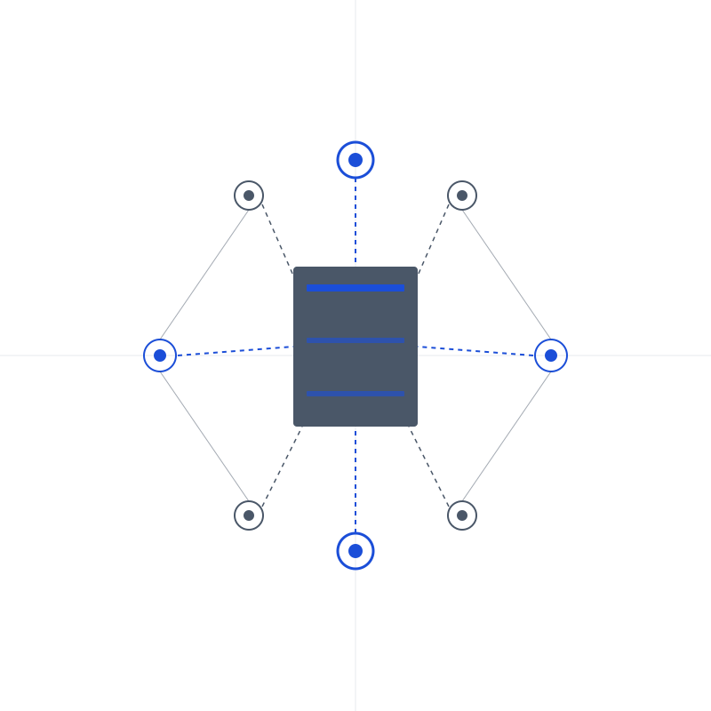
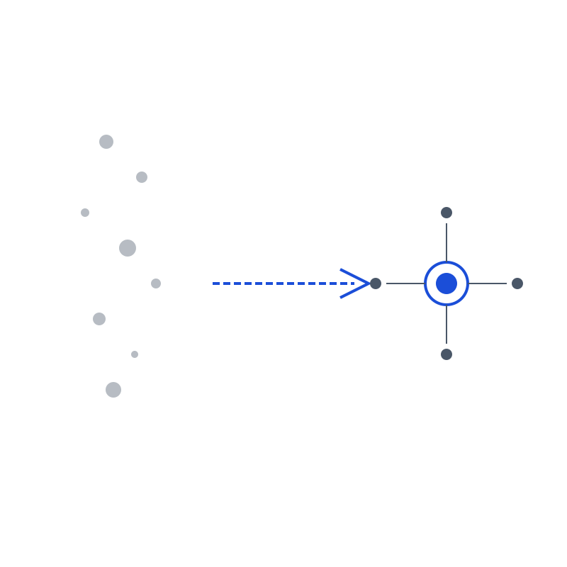
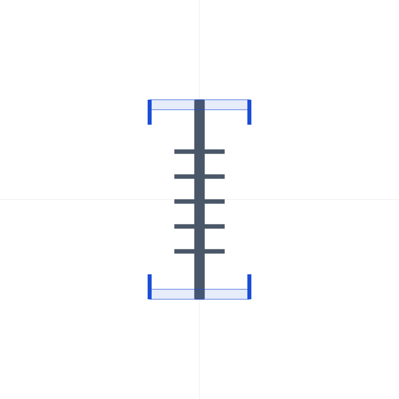
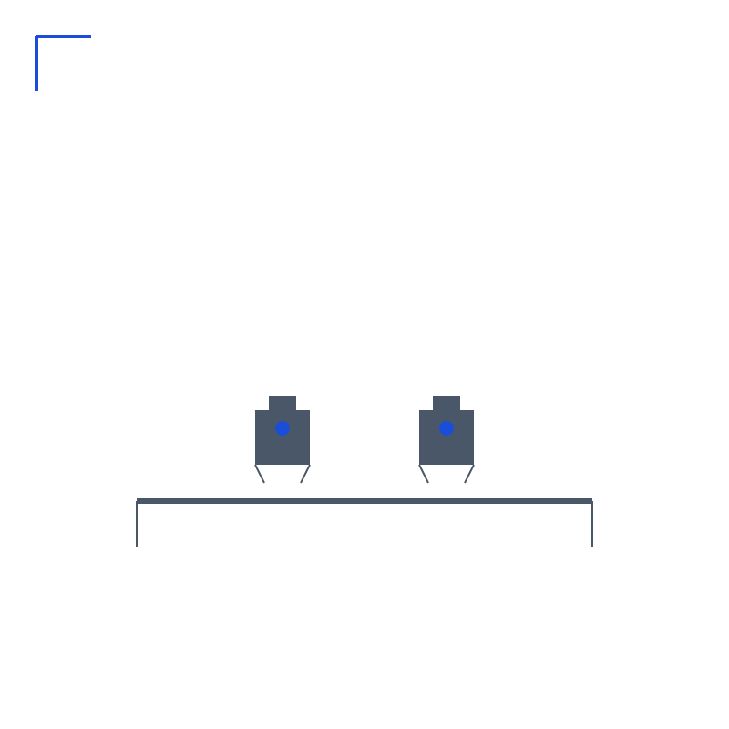
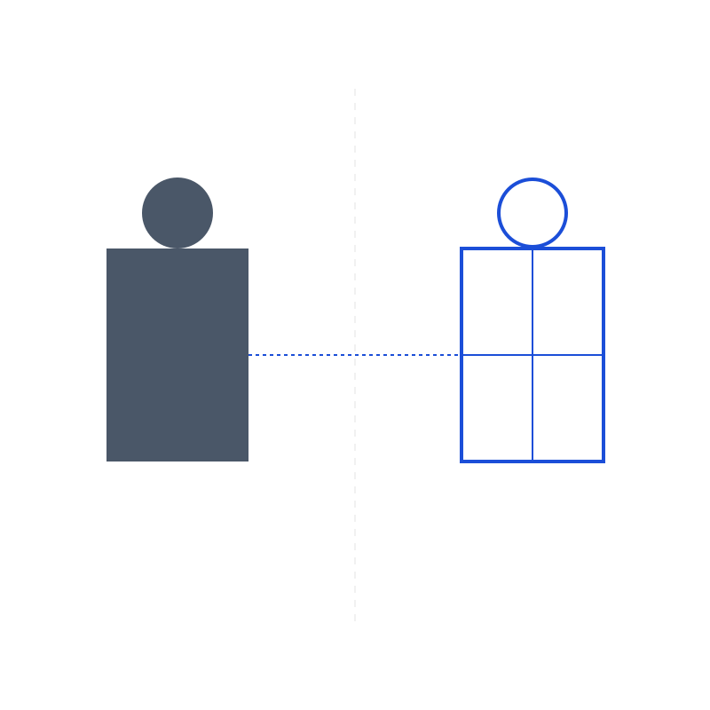

21 обезличенная клиентская история в production-формате. Один каталог, пять learning paths и фильтр по глубине входа: от раннего распознавания паттерна до более сложных управленческих и мировоззренческих сбоев.
Внутренний судья перестает маскироваться под здравый смысл и распознается как баг, который срывает клиента из жизни в самопроверку.
Похвала, тишина и спор перестают быть приговором, когда клиент вынимает свое достоинство из чужого рейтинга и возвращает его в критерий живости.

Красивые инструменты перестают подменять собой личное применение, когда клиент снова подчиняет систему реальному росту жизни, а не наоборот.

Бытовые сбои вскрывают скрытую зависимость от маршрута, пока любовь не возвращается на позицию цели номер один прямо внутри дня.
Реализация перестает быть тоннелем к флажку, когда главным KPI снова становится количество жизни в процессе, а не только итог.
Внешняя правильность уступает место внутреннему «хочу», и план снова становится гипотезой живого человека, а не схемой без хозяина.

Шумный внешний фидбек теряет силу приговора, когда клиентка возвращает себе факты доверия, свою ценность и собственный стандарт качества.

Болезнь и перегруз перестают быть моральным поражением, когда внутренний сигнал становится достаточным основанием для восстановления без внешней санкции.

Любимое дело перестает выгорать, когда клиентка разводит передачу понимания и обязанность своими руками производить чужой результат.
Собственная сила перестает автоматически вести в самопотерю, когда клиентка снова различает «умею», «люблю» и «хочу».
Личное время снова получает хозяина, когда коммуникации переводятся в асинхрон, а границы задаются заранее, а не через поздний срыв.

Холодный контакт перестает выбрасывать клиента из жизни, когда чужой климат больше не принимается за свою внутреннюю правду.
Живое желание перестает проигрывать внутреннему совету директоров, когда расчеты снова обслуживают импульс, а не выносят ему приговор.
Оплата перестает звучать как моральная неловкость, когда клиентка отделяет стоимость услуги от оценки собственной личности.
Живая идея перестает уходить в архив, когда клиент сначала делает короткий шаг, а уже потом строит вокруг него систему.
Рост дохода и Tesla перестают переживаться как временная ошибка, когда клиент возвращает себе право на уже созданный результат.
Маленькая нехватка больше не маскируется под безобидный мостик, когда быстрый займ распознается как повтор старой кредитной игры.
Пауза перестает обнулять путь, когда возврат строится не через идеальный рестарт, а через маленький живой вход обратно в процесс.
Командный кивок перестает обманывать, когда клиент больше не путает вежливое согласие с настоящей включенностью.
Риск перестает стягивать клиента в кнопочки и ставки, когда страх переводится в рамку, волны запуска и ясные условия игры.
Вечерний скролл теряет роль аварийного клапана, когда напряжение начинают выражать раньше, чем оно успевает попроситься в экран.